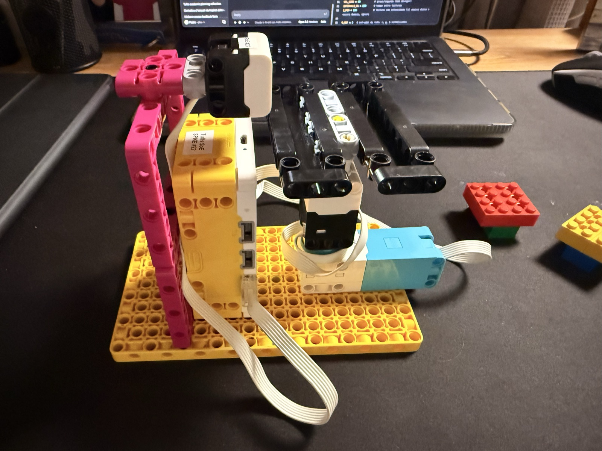
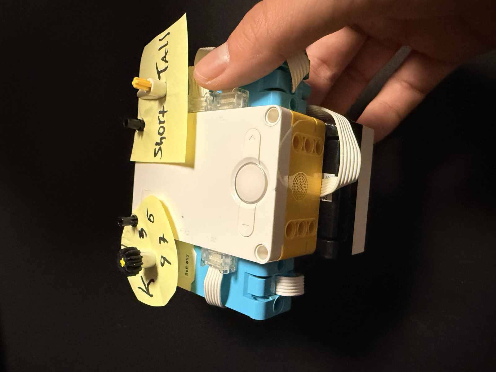

04 M — Sheet 16 / 18
Create a supervised classification device that can tell "high" from "low" heights.

The machine-learning project: build a supervised classification device that can tell "high" from "low" heights. Mine measures with the distance sensor and classifies with K-Nearest-Neighbors, which is the slide's extension question, and the part I added is that K lives on a physical knob.
Training is teaching it by hand. The display shows S, you hold something at a short height and press the left button, five times. Then T, and five tall examples. Ten in total, which is exactly enough for even K equals 9 to have neighbors to vote.

The interface is two motors, and neither of them drives anything. The one on E is the K knob: a paper dial with an arrow on the axle, 45 degrees per step, pointing at 1, 3, 5, 7 or 9, and the program just reads the motor's angle to know which K you picked. The one on D is the answer: its arrow swings left for short, right for tall, and back to the middle when the program stops. Both dials are sticky notes.
To decide, it measures the gap from the new reading to every saved example, sorts them, and lets the K closest vote. Majority wins, and K is always odd so two labels can't tie. There's no rule like "under 100 mm means short" anywhere in the program. Everything it knows is the ten examples.
Each reading averages five sensor samples, a reading that sees nothing doesn't get classified, and every decision prints to the console with its vote count.
The program was written with Claude's help, and its header says so.
Still to add: how it did live, and whether turning the knob flips a borderline answer.
# EN1 - KNN classifier: SHORT vs TALL heights (LEGO SPIKE Prime)
# Generated with the assistance of Claude (Anthropic), on Nov 2, 2026
#
# Ports:
# F = Distance Sensor
# E = "K knob" motor (you turn it by hand, arrow points at 1/3/5/7/9)
# D = "answer" motor (arrow swings LEFT = short, RIGHT = tall)
#
# BEFORE you press play:
# - Point the K-knob arrow (E) at "1".
# - Point the answer arrow (D) straight UP (the middle).
# The program treats those starting positions as zero.
#
# How to use:
# 1. Matrix shows "S": put something at a SHORT height, press LEFT button.
# Repeat until it has SAMPLES_PER_CLASS short examples.
# 2. Matrix shows "T": same thing at a TALL height.
# 3. Now it classifies live. Turn the knob on E to change K
# (the matrix shows the current K). Arrow D points to the answer.
# Press RIGHT button to stop.
from hub import light_matrix, button, port, sound
import distance_sensor
import motor
import runloop
SENSOR = port.F
K_KNOB = port.E
ANSWER = port.D
SAMPLES_PER_CLASS = 5 # 5 short + 5 tall = 10 examples, so K=9 still works
K_VALUES = [1, 3, 5, 7, 9]
DEGREES_PER_STEP = 45 # turn the knob 45 degrees to go to the next K
ARROW_ANGLE = 90 # how far the answer arrow swings from the middle
FLIP = 1 # if the arrow goes the wrong way, change this to -1
data = [] # training set: list of (distance_mm, label)
async def read_distance():
# Average 5 readings to reduce noise. Returns -1 if nothing is seen.
total = 0
count = 0
for i in range(5):
d = distance_sensor.distance(SENSOR)
if d != -1:
total += d
count += 1
await runloop.sleep_ms(40)
if count == 0:
return -1
return total // count
def read_k():
# How far has the knob been turned since the start?
# abs() means you can turn it either direction.
angle = abs(motor.relative_position(K_KNOB))
step = round(angle / DEGREES_PER_STEP)
if step > len(K_VALUES) - 1:
step = len(K_VALUES) - 1
return K_VALUES[step]
async def point_answer(label):
if label == "S":
target = -ARROW_ANGLE * FLIP
elif label == "T":
target = ARROW_ANGLE * FLIP
else:
target = 0
await motor.run_to_relative_position(ANSWER, target, 300)
async def wait_for_left_press():
while not button.pressed(button.LEFT):
await runloop.sleep_ms(20)
while button.pressed(button.LEFT): # wait for release
await runloop.sleep_ms(20)
async def collect(label):
n = 0
while n < SAMPLES_PER_CLASS:
light_matrix.write(label)
await wait_for_left_press()
d = await read_distance()
if d == -1:
print("Nothing detected - try again")
await sound.beep(200, 300, 80)
continue
data.append((d, label))
n += 1
print("Saved", label, "sample", n, ":", d, "mm")
await sound.beep(880, 120, 80)
def classify(x, k):
# 1) gap from the new reading to every training example
neighbors = []
for (d, label) in data:
neighbors.append((abs(x - d), label))
# 2) sort: closest examples first
neighbors.sort()
# 3) the k closest examples vote
votes_short = 0
votes_tall = 0
for (gap, label) in neighbors[:k]:
if label == "S":
votes_short += 1
else:
votes_tall += 1
if votes_short > votes_tall:
return "S", votes_short, votes_tall
return "T", votes_short, votes_tall
async def main():
# The arrows' starting positions become "zero"
motor.reset_relative_position(K_KNOB, 0)
motor.reset_relative_position(ANSWER, 0)
# ---- TRAINING ----
await collect("S")
await collect("T")
print("Training data:", data)
await sound.beep(660, 150, 80)
await sound.beep(990, 150, 80)
# ---- CLASSIFYING ----
current = None # what the answer arrow is pointing at right now
while not button.pressed(button.RIGHT):
k = read_k()
light_matrix.write(str(k))
x = await read_distance()
if x == -1:
guess = None
print("Nothing detected")
else:
guess, vs, vt = classify(x, k)
print(x, "mm | K =", k, "| votes short:", vs, "tall:", vt,
"->", "SHORT" if guess == "S" else "TALL")
# only move the arrow when the answer changes
if guess != current:
await point_answer(guess)
current = guess
await runloop.sleep_ms(150)
await point_answer(None) # arrow back to the middle
light_matrix.write("X")
print("Stopped.")
runloop.run(main())